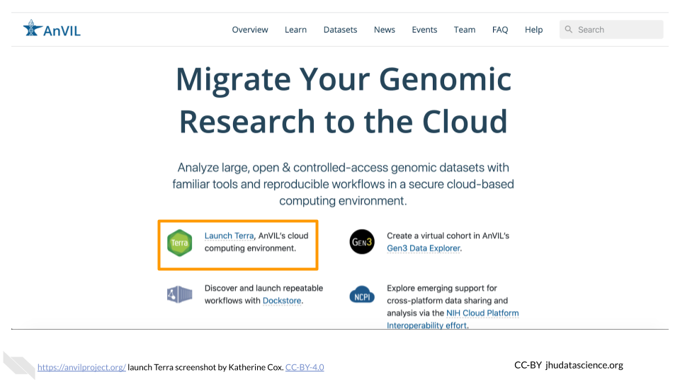
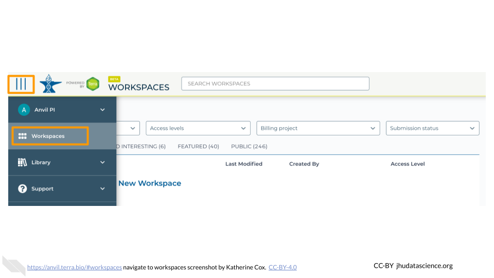

A Pre-lab
Welcome! This lab will introduce you to some basic data analysis using the R programming language. In order to do this, there are a few steps you need to complete so that you can access the material and be ready to start computing with R.
A.1 Set up AnVIL Account
In order to run your analyses, you will use the AnVIL cloud computing platform, so that you do not need to install everything on your own computer. The AnVIL (Analysis Visualization and Informatics Lab-space) platform is specially designed for analyzing biological data, and is used by scientists doing all sorts of biological research.
AnVIL in a nutshell
- Behind the scenes, AnVIL relies on Google Cloud Platform to provide computing infrastructure. Basically, AnVIL lets you “rent” computers from Google (remotely). Whenever you run an analyses on AnVIL, it actually runs on one of Google’s computers, and AnVIL lets you see the results in your browser.
- AnVIL uses Terra to provide many computational tools useful for biological data analysis, such as RStudio, Galaxy, and Jupyter Notebooks. Terra takes care of installing these tools on Google’s computers, so that you can just start using them.
A.1.1 Create Google Account
First, you will need to set up a (free) Google account.
If you do not already have a Google account that you would like to use for accessing AnVIL, create one now.
- Alternatively, if you would like to create a Google account that is associated with an existing non-Gmail email address, you can follow these instructions.
A.1.2 Log In to Terra
Next, make sure you can log in to Terra – you will use Terra to perform computations on AnVIL.
You can access Terra by going to anvil.terra.bio, or by clicking the link on the AnVIL home page.

Open Terra, and you should be prompted to sign in with your Google account.
A.2 Access Materials (Clone Workspace)
This will not work until your instructor has given you permission to spend money to “rent” the computers that will power your analyses (by adding you to a “Billing Project”).
On AnVIL, you access files and computers through Workspaces. Each Workspace functions almost like a mini code laboratory - it is a place where data can be examined, stored, and analyzed. The first thing we want to do is to copy or “clone” a Workspace to create a space for you to experiment. This will give you access to
- the files you will need (data, code)
- the computing environment you will use
Tip At this point, it might make things easier to open up a new window in your browser and split your screen. That way, you can follow along with this guide on one side and execute the steps on the other.
To clone an AnVIL Workspace:
Open Terra - use a web browser to go to
anvil.terra.bioIn the drop-down menu on the left, navigate to “Workspaces”. Click the triple bar in the top left corner to access the menu. Click “Workspaces”.

You are automatically directed to the “MY WORKSPACES” tab. Here you can see any Workspaces that have been shared with you, along with your permission level. Depending on how your instructor has set things up, you may or may not see any Workspaces in this tab.

Locate the Workspace specified by your instructor. (The images below show the SARS-CoV-2-Genome Workspace as an example, but you should look for the Workspace specified by your instructor.)
- If it has been shared with you ahead of time, it will appear in “MY WORKSPACES”.

- Otherwise, select the “PUBLIC” tab. In the top search bar, type the Workspace name specified by your instructor.

- You can also go directly to the Workspace by clicking this link: ask your instructor.
Clone the workspace by clicking the teardrop button (
 ). Select “Clone”. Or, if you have opened the Workspace, you can find the teardrop button on the top right of the Workspace.
). Select “Clone”. Or, if you have opened the Workspace, you can find the teardrop button on the top right of the Workspace.

You will see a popup box appear, asking you to configure your Workspace
- Give your Workspace clone a name by adding an underscore (“_“) and your name. For example, "ExampleWorkspace_Firstname_Lastname".
- Select the Billing Project provided by your instructor.
- Leave the bottom two boxes as-is.
- Click “CLONE WORKSPACE”.

The new Workspace should now show up under “MY WORKSPACES”. You now have your own copy of the Workspace to work in.
Pause here if you are not going to be doing the lab exercises right away. Once you start up RStudio, it will cost money to keep it running. It costs a few cents an hour, so it’s quite cheap as long as you use it responsibly. But it can add up if you leave it running for days or weeks when you don’t need it.